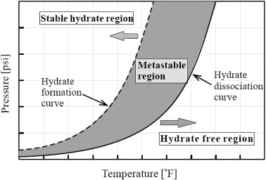

My Notes
Gas Hydrates 101
Gas hydrates, often referred to as "ice that burns," are fascinating compounds composed of gas molecules trapped within a lattice of water molecules. These crystalline structures occur under specific temperature and pressure conditions, commonly found in deep-sea sediments and permafrost regions. While gas hydrates hold significant energy potential and pose numerous environmental challenges, it is crucial to comprehend their formation mechanisms and explore preventive techniques. In this blog, we will delve into the intricacies of gas hydrates and discuss effective strategies to mitigate their impact.

Hydrate Formation Mechanism in Pipelines
Formation Mechanisms of Gas Hydrates:
The formation of gas hydrates involves the interplay of three crucial factors: suitable temperature, elevated pressure, and the presence of gas and water.
1. Low Temperature: Gas hydrates typically form under low-temperature conditions, such as those prevailing in deep-sea sediments or permafrost regions. Temperatures below the freezing point of water are necessary to initiate hydrate formation.
2. Elevated Pressure: High pressure is a prerequisite for gas hydrate stability. In deep-sea environments, the pressure increases with depth, favoring the formation and preservation of gas hydrates. Similarly, permafrost regions exhibit elevated pressure due to the insulating effect of frozen ground.
3. Gas-Water Interaction: Gas molecules, such as methane, are attracted to water molecules due to weak van der Waals forces. The gas molecules become trapped within the water lattice structure, forming gas hydrates. The specific hydrate structure formed depends on the type and composition of the gas and the water.

Hydrate Formation Curve
Hydrate Formation Curve
A hydrate formation curve, also known as a phase envelope, is a graphical representation of the conditions under which gas hydrates can form or dissociate. It is a plot of pressure versus temperature, illustrating the boundary between the hydrate stability region and the hydrate instability region for a given fluid system.
Stability Region:The stability region on the hydrate formation curve represents the conditions under which gas hydrates are thermodynamically stable. Within this region, the energy of the gas hydrate phase is lower than that of the gas and liquid phases, making hydrates more favorable to form and persist. The stability of gas hydrates is influenced by factors such as temperature, pressure, gas composition, and water content.
Thermodynamically, the formation of gas hydrates is an exothermic process, releasing heat to the surroundings. When the pressure and temperature conditions fall within the stability region, gas molecules are attracted to water molecules, forming a crystalline hydrate lattice structure. The strength of the van der Waals forces between the gas and water molecules contributes to the stability of the hydrate phase.
Instability Region:The instability region, located below the hydrate formation curve, indicates conditions where gas hydrates are thermodynamically unstable. In this region, the energy of the gas and liquid phases is lower than that of the hydrate phase. Therefore, hydrates tend to dissociate, releasing the gas and returning to the gas and liquid phases.
The dissociation of gas hydrates is an endothermic process, requiring the absorption of heat from the surroundings. When the pressure and temperature conditions fall within the instability region, the lattice structure of the hydrate breaks down, releasing the trapped gas molecules and transforming into a gas-liquid mixture.
Hydrate Formation Curve Line:
The hydrate formation curve itself represents the boundary between the stability and instability regions. It is typically non-linear and exhibits curvature due to the complex thermodynamic behavior of gas hydrates. The shape of the curve is influenced by factors such as gas composition, water content, and the selected thermodynamic model.
Prevention Techniques for Gas Hydrates:
Although gas hydrates offer potential energy resources, they also pose challenges to various industries, including oil and gas production and transportation. Here are some prevention techniques employed to minimize the impact of gas hydrates:
1. Temperature Control: Raising the temperature above the hydrate formation range is an effective prevention strategy. This can be achieved by heating systems, insulation, or the addition of thermodynamic inhibitors, which modify the conditions required for hydrate formation.
2. Pressure Management: By controlling and maintaining pressure conditions within pipelines or storage facilities, gas hydrate formation can be mitigated. This involves maintaining pressures above the hydrate stability zone through the use of pressure regulators or periodic pressure cycling.
3. Chemical Inhibitors: Certain chemicals, known as hydrate inhibitors, can be added to the system to disrupt the formation and growth of gas hydrates. These inhibitors prevent the gas molecules from interacting with water molecules, thereby impeding hydrate formation. Commonly used inhibitors include methanol, ethanol, glycols, and salts.
4. Mechanical Removal: In cases where gas hydrates have already formed and pose a risk, mechanical removal techniques can be employed. These techniques involve the use of physical means to break down or dislodge hydrate plugs within pipelines or equipment, allowing for the resumption of normal flow.